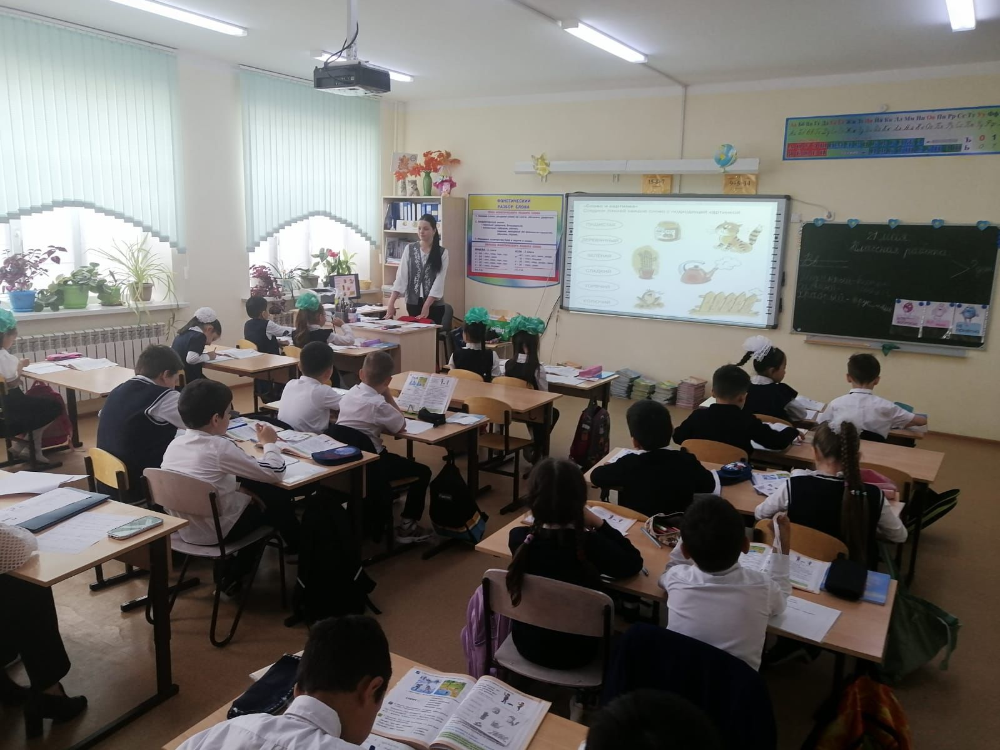
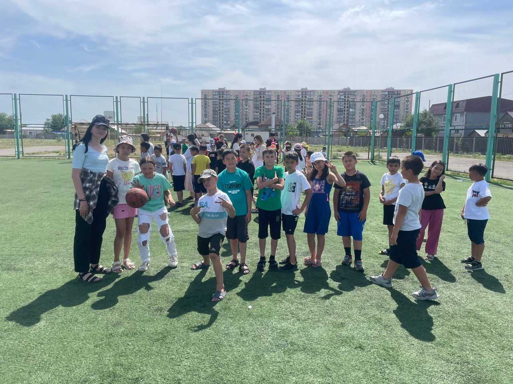
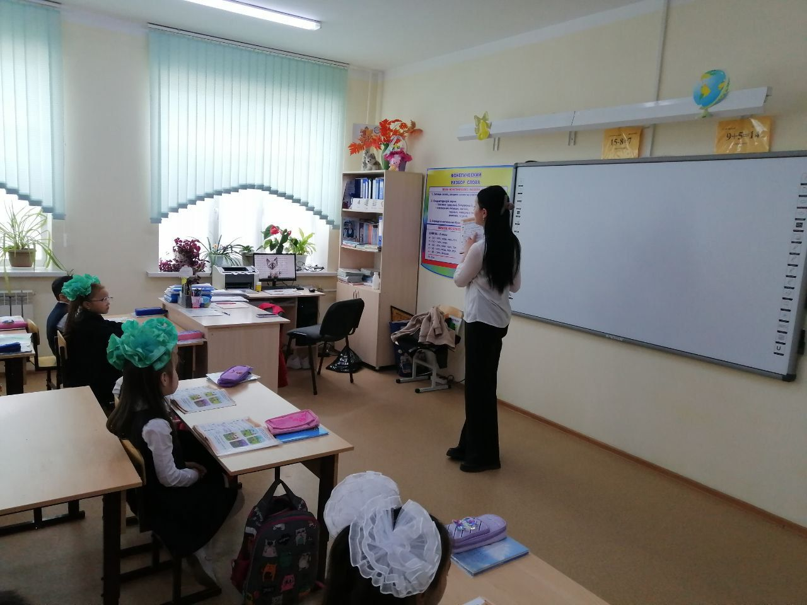
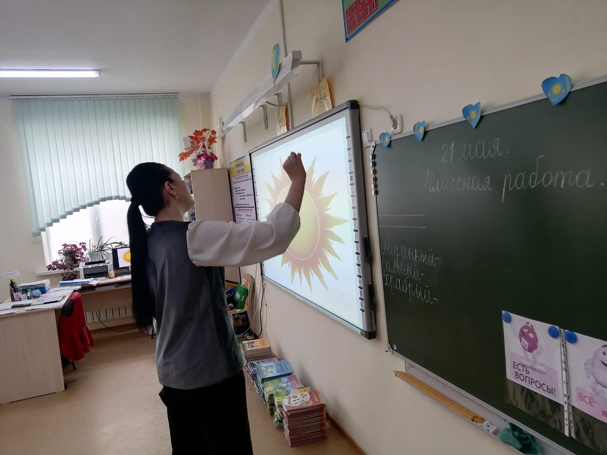
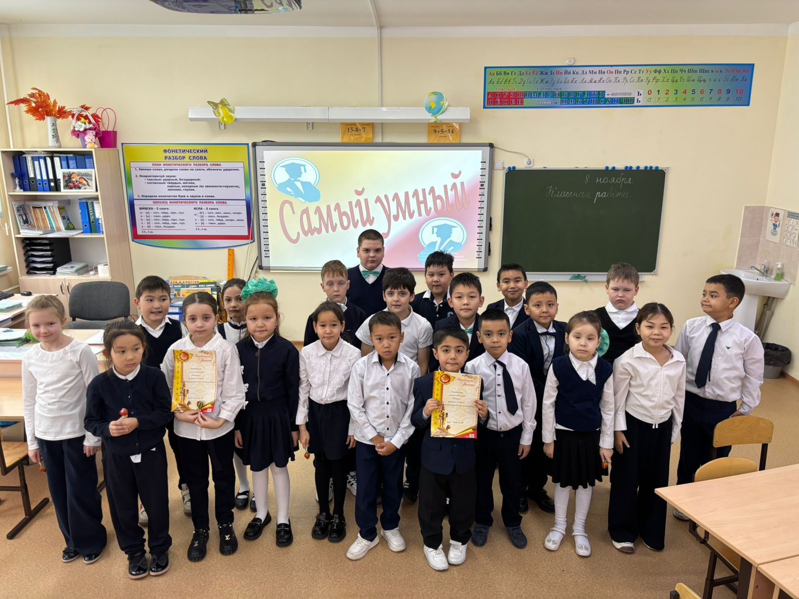
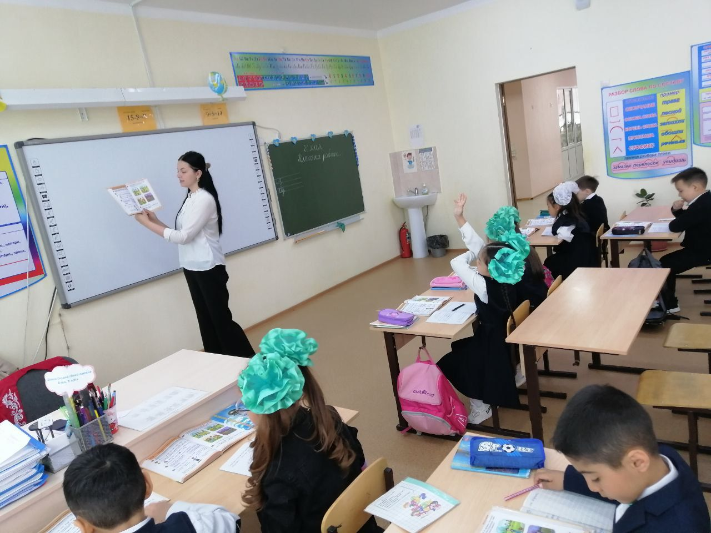
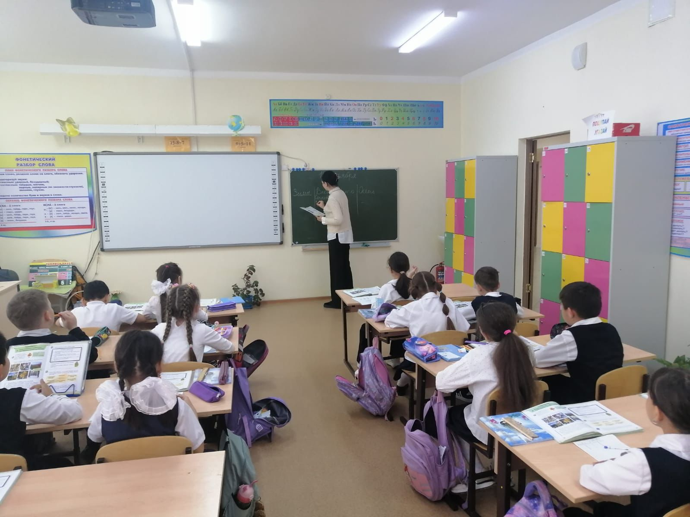
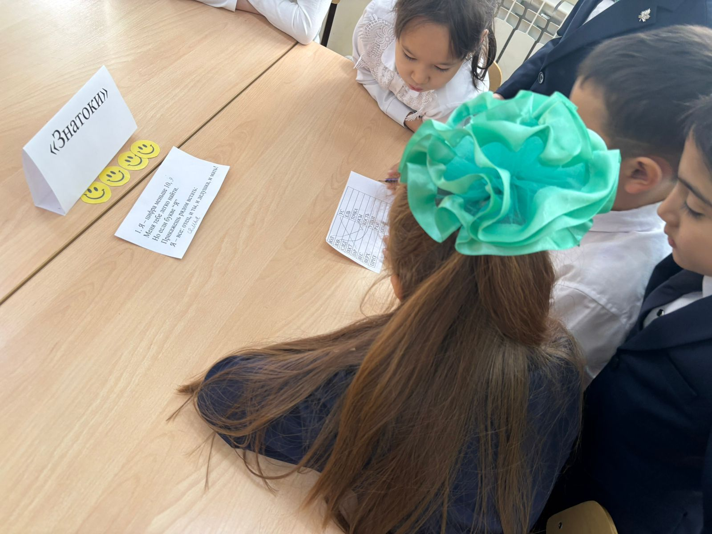

Привет! Меня зовут Мацупко Виктория , и я будущий учитель начальных классов. Выбор моей будущей профессии был предопределен, пожалуй, с самого детства. Я любила играть «в школу» то с куклами, то с подружками. Мне нравилось быть учителем: что-то объяснять, выставлять оценки в «журнал». Когда сама пошла в школу, поняла, на кого из своих учителей я хотела бы быть похожей. Мне всегда нравились учителя в меру строгие, неравнодушные, с искоркой в глазах и в душе. Ведь ученик всегда безошибочно чувствует, как к нему расположен учитель.